Why Ambience?
Ambience is dedicated to helping you achieve your goals by improving your concentration and focus using sounds designed to increase productivity
- Get Help Anytime:
We are constantly seeking feedback from our customers on ways to improve the bot. Our staff and development team are available anytime to help resolve issues or gain advice. Please join our discord server or contact our email to reach out to us.
- Easy to Use:
Ambience offers a simple, easy-to-use interface along with a straightforward set of commands to get bot up and running on your server in no time!
- Awesome Product:
Since Ambience is an open source project, we have a plethora of talented developers willing to make improvements and modifications to our bot.
- Open Source:
Ambience's code is available for anyone to work on. Please visit our GitHub repo to get more information on how to make contributions to the bot.
Features
Ambience contains many intuitive features that enables users to enjoy a wide range of commands easily.
Play and Search Sounds:
Play calming and peaceful sounds from 15+ categories. Our sounds are handpicked and selected to maximize your concentration and focus. Furthermore, you can search for specific sounds using the search command.
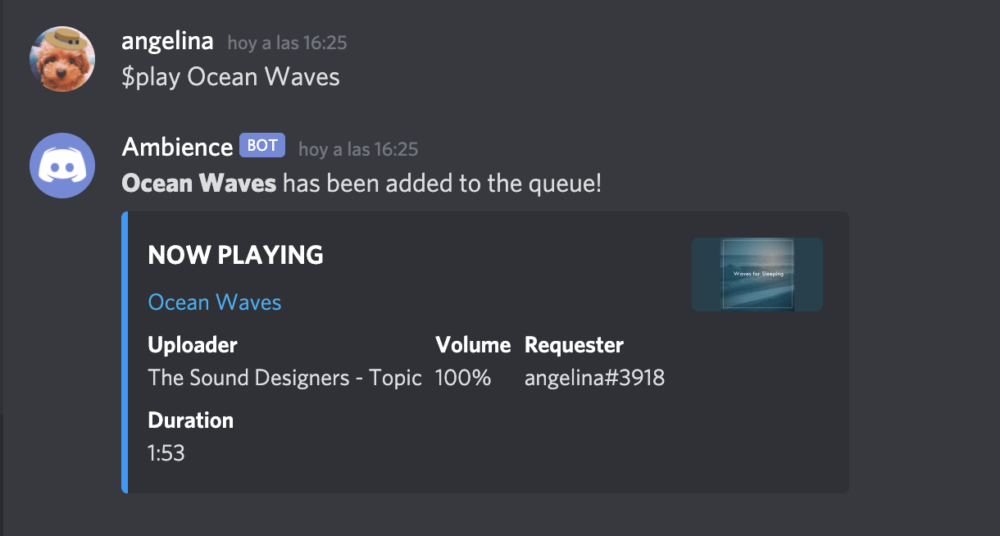
View Sounds:
Along with searching for sounds, Ambience provides more commands for users to view sounds within specific categories.
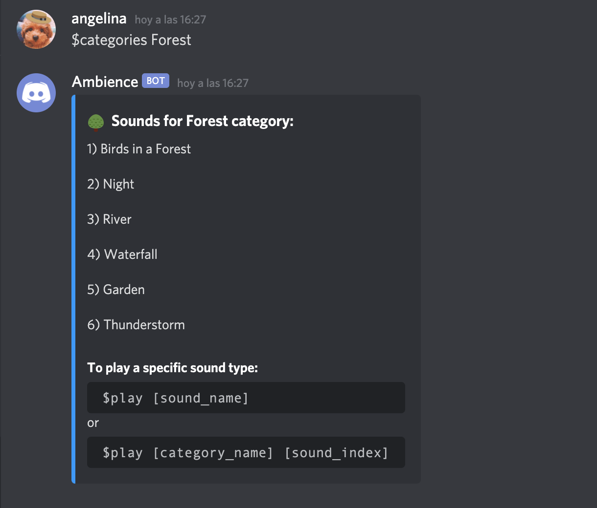
Listen to Custom Music:
If you want to listen to other music aside from Ambience's provided songs, you can enter the $custom [song_name or url] to play your own music!
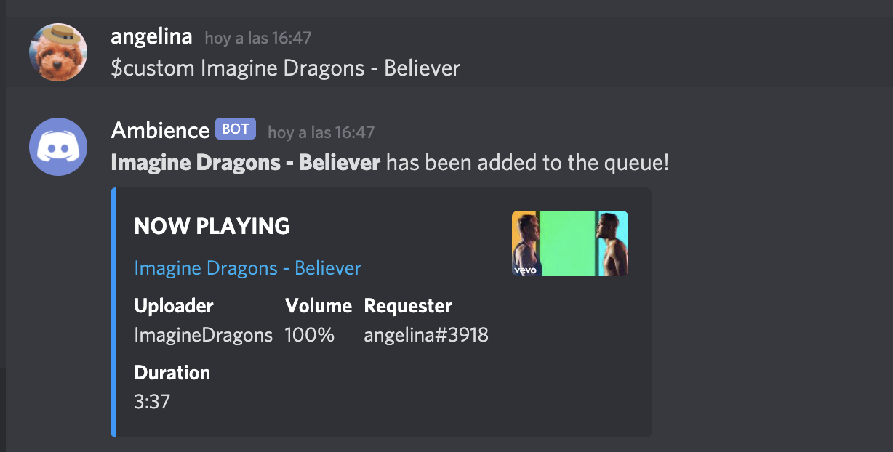
Advanced Options:
While listening to sounds by Ambience, you can also use other commands that provide additional information and functionality.
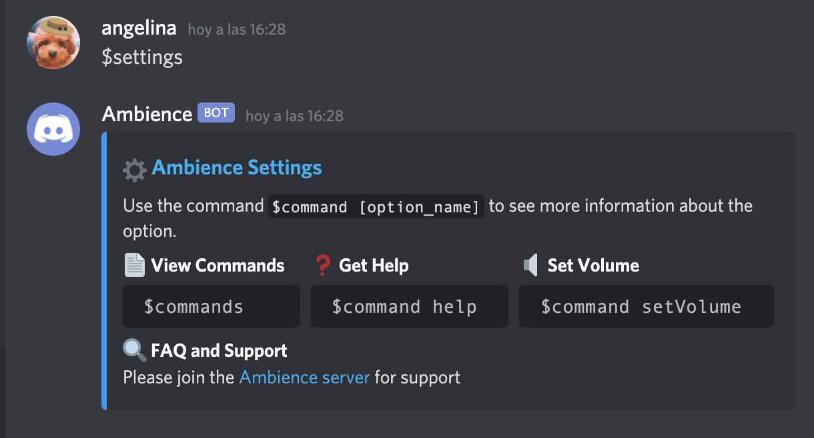
Let's Get you Started!
Invite Ambience to your Discord server to improve your focus and concentration in no time! Instructions on how to invite Ambinece are listed below.
Inviting Ambience
- Step One: Invite the Ambience bot by clicking the button below:
Invite Bot
- Step Two: Once you see the Discord invite menu, click the "Select a server" button and select a server you would like to add Ambience to.
- Step Three: On the Invite Authorization page for Ambience, make sure all the checkboxes are checked and click "Authorize".
- Step Four: Validate that your not a robot by clicking on the checkbox next to "I am not a robot".
- Step Five: Go back to Discord and Ambience should be added to your server!.
Viewing Sounds
In order to view all of Ambience's sounds, please type: $sounds. To view sounds within a specific category, $categories [category_name].
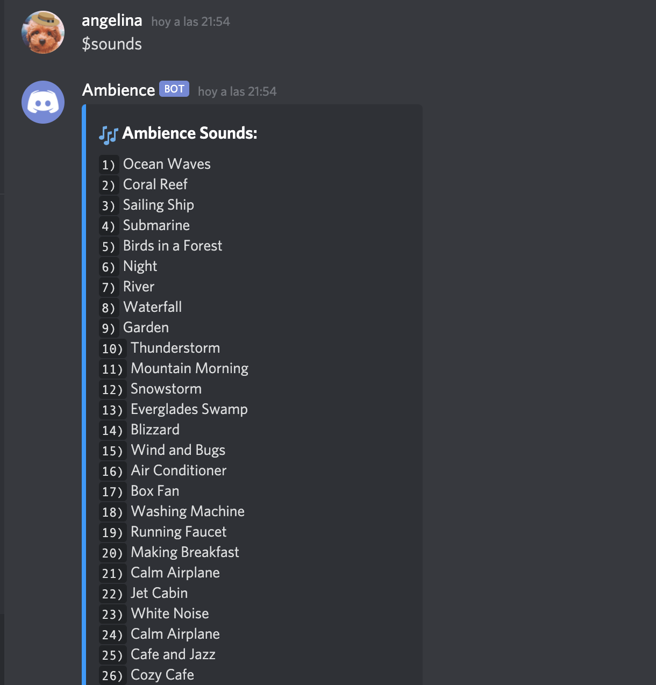
Playing a Sound
To play one of Ambience's sounds use the command: $play [sound_name] or $play [category_name] [sound_index]. If you want to play a custom sound, please type: $custom [song_name] or [sound_link]
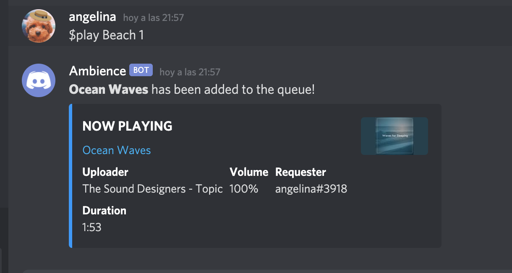
Sound Management
To pause the current sound, type: $pause. In order to resume the current song type: $resume. To skip a song type: $skip and to loop the current song type: $loop
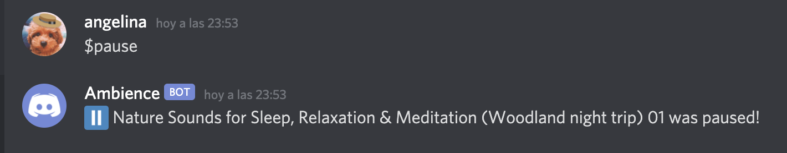
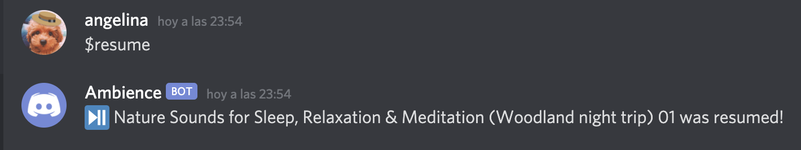
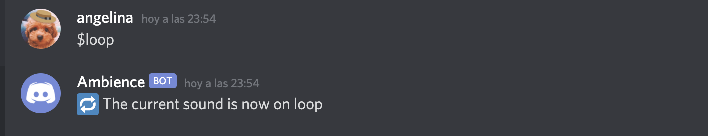
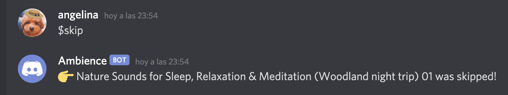
Managing the Queue
To view all sounds within the server queue type: $queue. To stop all sounds and empty the queue type: $stop. To shuffle sounds within the queue type: $shuffle
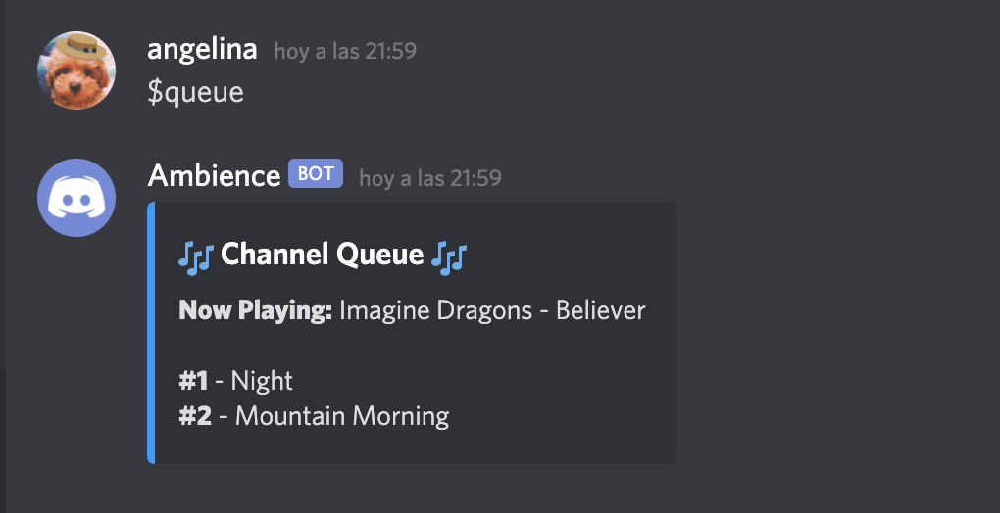
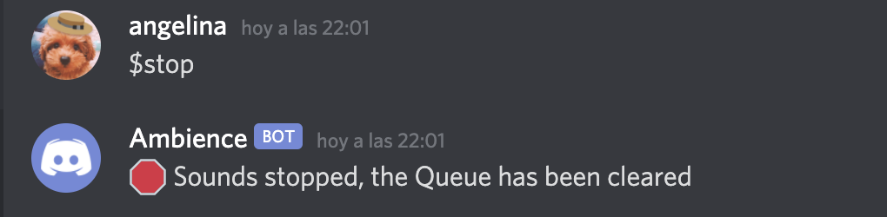
Song Commands
Play a sound or add one to the queue:
$play [sound_name] or $play [category_name] [sound_index]
Play a custom sound or add one to the queue:
$custom [sound_name] or $custom [sound_link]
Play a random song from Ambience:
$random
Plays a playlist of calming sounds:
$playlist
Resume the current song:
$resume
Pause the current song:
$pause
Skip the current song:
$skip
View progess bar of current song:
$progress
Loop current song:
$loop
Set Volume
$setVolume [percentage]
Queue Commands
View Server Queue:
$queue
Shuffle Server Queue:
$shuffle
Repeat Server Queue:
$repeatQueue
Disable Repeat Server Queue:
$disableRepeatQueue
Stop all songs and clear queue:
$stop
Remove a song from the queue by position:
$remove [song_position]
Search Commands
Search for a Sound:
$search [search]
View all Sounds:
$sounds
View all Categories:
$categories
Settings Commands
View All Commands:
$commands
View Information about Specific Commands:
$command [command_name]
Change Bot Settings:
$settings
Change Bot Prefix:
$prefix [prefix]
Get Help:
$help
Ambience Server
Have fun playing around with the Ambience bot while making meaningful friendships with like-minded people on our Ambience server! Please click the button below to join our community!
Join the Community
Buy us a Coffee
Ambience supports and greatly appreciates any donations for our users. We love our customers and any extra help would be appreciated! Please click the button below to donate to the Ambience bot.
Donate
Contribute Code
The Ambience bot is open sourced and the code is available to anyone on the internet. If you would like to make a contribution to the Ambience bot please visit our Github repo and read our README to learn how to contribute to our codebase.
Contribute
Spread the Word
The Ambience bot was specifically created to help people concentrate and improve their productivity. Please consider telling your friends about the Ambience bot to help them improve their focus. The more the merrier!
How do I see all the Ambience's commands?
To see all of Ambience's commands please visit this section of the documentation. Furthermore, you can view all of Ambience's commands by typing $commands on the Discord chat.
How can I invite Ambience to my server?
You can invite the Ambience bot by clicking this link. To view the steps to invite Ambience to your Discord server, please visit this section of the documentation.
How do I play a sound in Ambience?
To play a sound in Ambience you must type $play [sound_name] where [sound_name] is the name of your desired sound. To view all of Ambience's sounds type $custom [song_name or url] into the chat.
Where can I get help if Ambience isn't working?
Our devoted staff is available at almost anytime to get you the help you need. Please ask for help on the Ambience server or directly contact us ambiencebot0@gmail.com to get help.
Contact Ambience
The Ambience team is available anytime on our Discord server. For more personal questions or concerns please contact us at ambiencebot0@gmail.com to get help as soon as possible
Ambience Server
The Ambience is server is available to any member of the community that would like to get to know the Ambience bot better as well as receive support from any member of our staff. If you would like to join, please click this link.